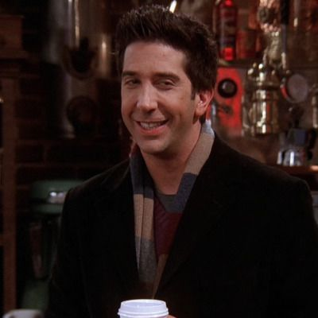
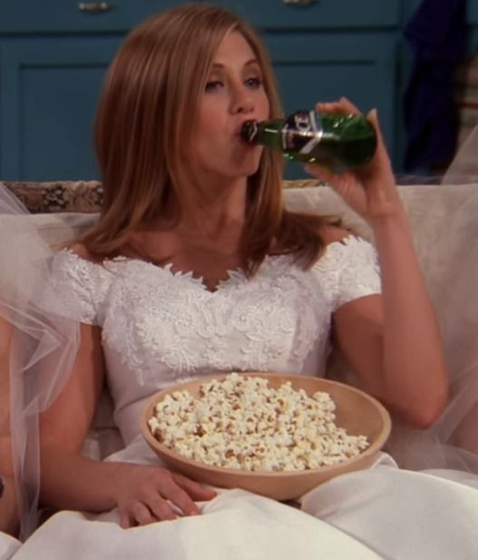
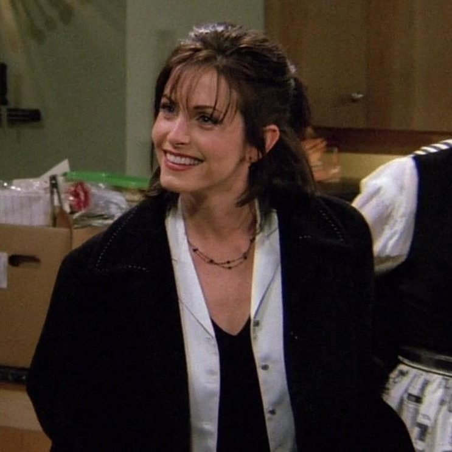
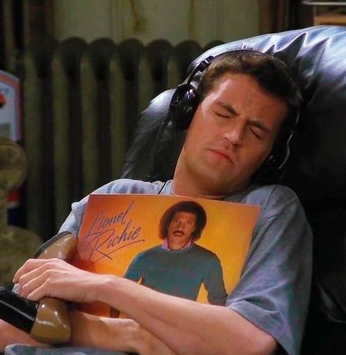
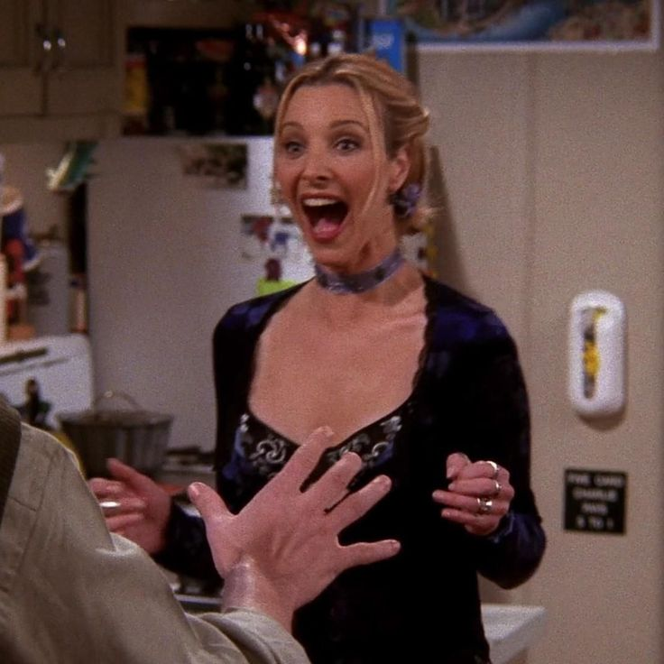

Ross Geller
Paleontólogo, hermano de Monica. Inteligente y algo torpe, su relación con Rachel es central.
“We were on a break!”

Rachel Green
De camarera en Central Perk a trabajar en moda. Su historia con Ross es inolvidable.
“It’s like all my life everyone has always told me, ‘You’re a shoe!’”

Monica Geller
Chef perfeccionista y amante del orden. Hermana de Ross y anfitriona del grupo.
“Welcome to the real world. It sucks. You’re gonna love it!”

Chandler Bing
Conocido por su sarcasmo y humor, trabaja en análisis de datos y es inseparable de Joey.
“I’m not great at advice. Can I interest you in a sarcastic comment?”
Joey Tribbiani
Actor en busca de fama, ingenuo pero encantador. Su frase icónica es inolvidable.
“How you doin’?”

Phoebe Buffay
Excéntrica y divertida, toca la guitarra en Central Perk. Sus canciones y personalidad son únicas.
“Smelly Cat, Smelly Cat, what are they feeding you?”